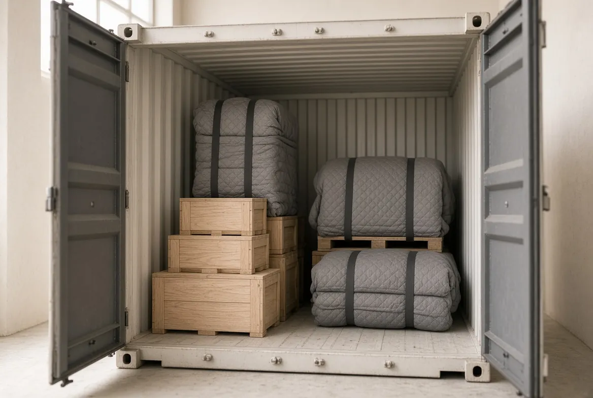
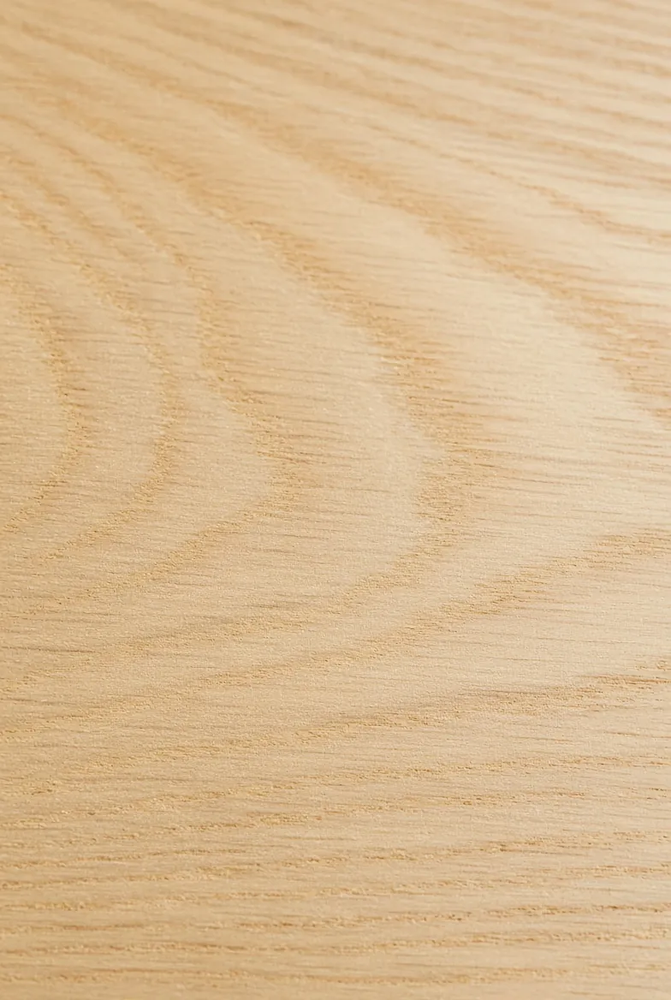
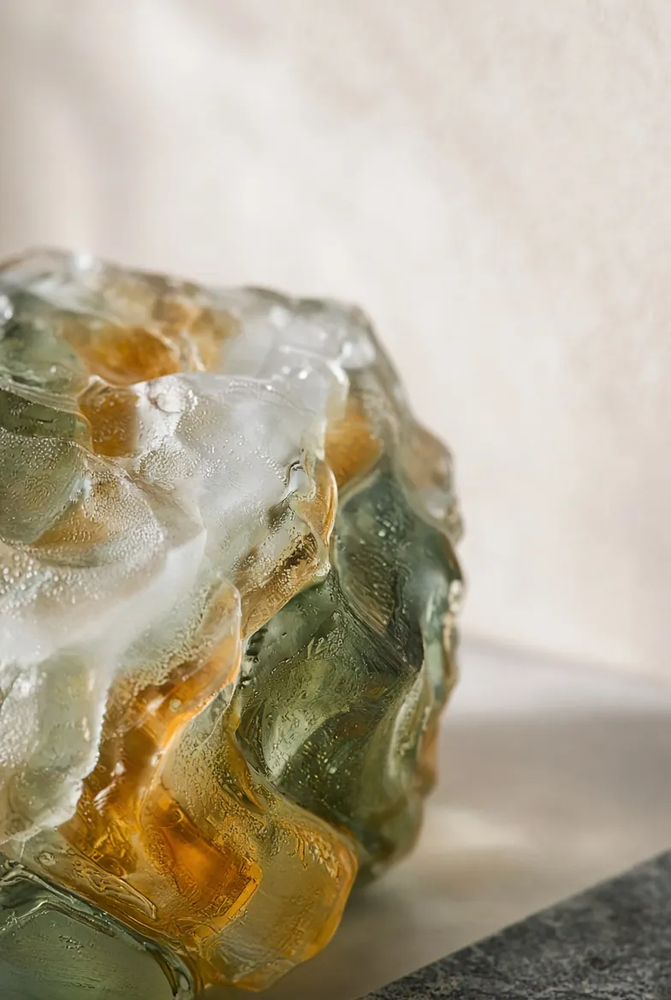
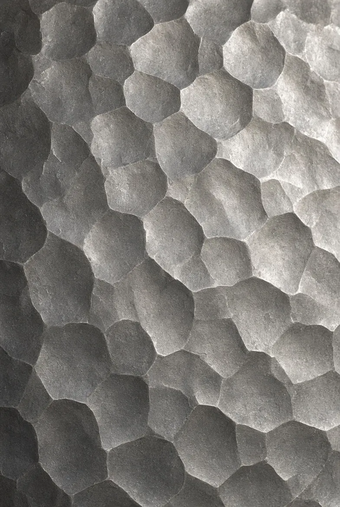
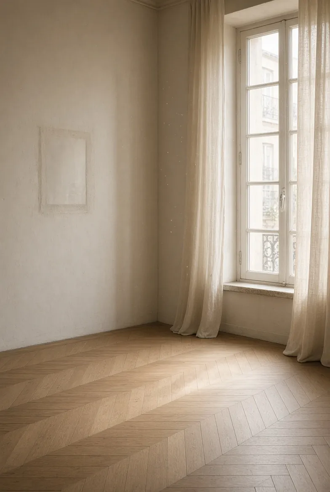

Containers for overseas trade buyers
For our overseas trade clients, we handle your containers: packing, loading and customs formalities.
Furniture and objets d’art from the 16th to the 20th century, guaranteed antique, in Metz since 1969.


Our shop at 5 rue Gambetta in Metz holds a substantial stock of furniture and objets d’art from the 16th to the 20th century.
Each piece is shown with its real dimensions. Scroll through the room.


A question about a piece? Prices are given on request.
The whole galleryCarved Sainte-Lucie wood, acid-etched glass, hammered sheet steel: three crafts tied to Nancy, all in the gallery today.

Sainte-Lucie wood is also called Bagard wood, after the Lorraine sculptor César Bagard (1620–1709).

Multi-layered glass, acid-etched, wheel-finished and hammered: a signed Art Nouveau vase.

A wall light from around 1925, lent to the Centre Pompidou in 1990 for the “Constructeur” exhibition.

Inventory, valuation and a priced report, for insurance, an estate or a company.
An appraisal is the most effective way to prove that valuable objects exist, through an inventory and a prior valuation.

Honorary court-appointed expert at the Court of Appeal
Member of the Compagnie Nationale des Experts en Art

A priced, photographed inventory of your belongings, to choose the right insurance and prove they exist.

Valuation of the furniture and works of art in an estate, at the request of the heirs or the notary.

A descriptive inventory of equipment and furniture, to be insured at the right level.
Online or by phone, with a few photos if you can.
Each object is described and photographed.
Each object is priced and classified by type.
You receive an original, detailed and priced file.

For our overseas trade clients, we handle your containers: packing, loading and customs formalities.

Valuation, appraisal and purchase of estates and divisions, with a careful house-clearance service.
Our shipping is handled with care, by professionals.
Antique furniture, objets d’art, paintings, bronzes, clocks, silverware: valuation and purchase.
Offer an object
Metz — Nancy — Luxembourg
Close to Metz railway station.
The house’s second address. What happens there (storage, workshop, visits): to be confirmed